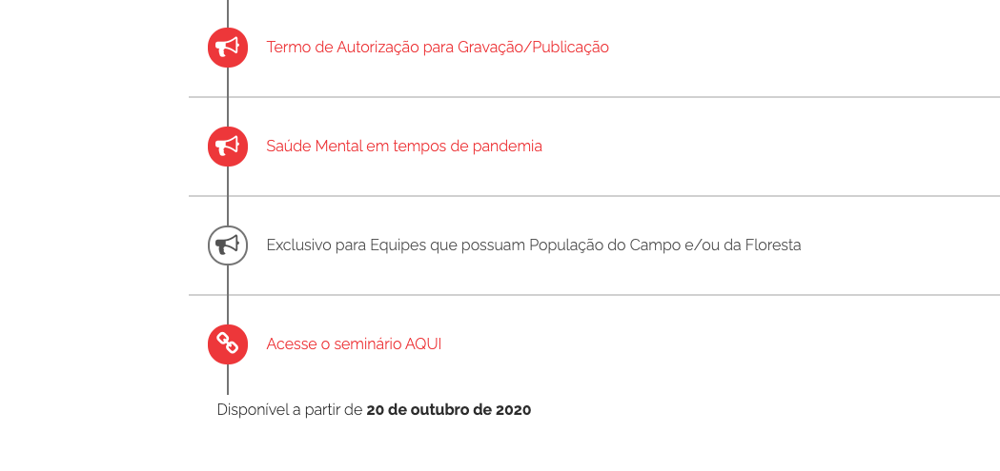
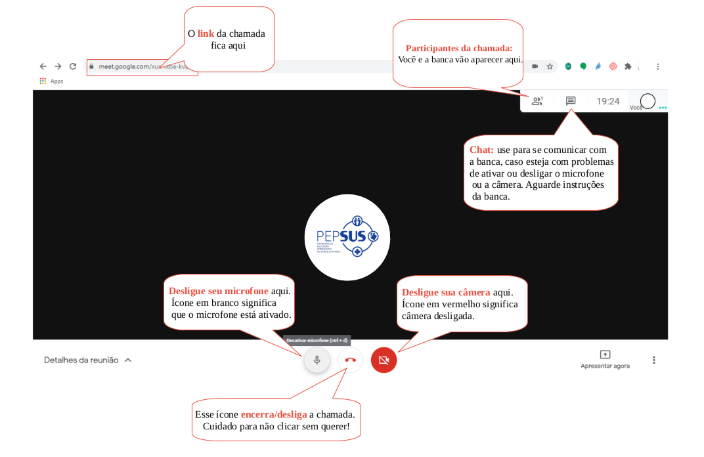

Curso de Especialização em Saúde da Família (PEPSUS)
Cronograma de apresentações de TCC
ORIENTAÇÕES BÁSICAS PARA O SEMINÁRIO DE APRESENTAÇÃO DO TCC DO PEPSUS
PLANEJE TUDO COM ANTECEDÊNCIA!
Organize-se para permanecer online durante todo o turno de sua apresentação, elas serão em blocos de 5 a 10 alunos por sala e todos devem estar online no início das apresentações para receber todas as orientações. Fique à vontade para convidar outras pessoas para assistir a sua apresentação.
Ensaie a sua apresentação! Isso ajuda, por exemplo, a controlar o tempo de apresentação que deverá ser de 5 a 10 minutos.
Tenha internet, câmera e microfone! Recomendamos que teste a sua câmera e o seu microfone no dia anterior.
No dia e turno agendado acesse o módulo de “Seminário de Apresentação do TCC” e clique em “Acesse o Seminário Aqui” (seguindo as demais instruções) ou acesse o link enviado pelo seu Facilitador no Espaço de Interação Aluno/FP. Caso tenha dificuldades acesse o Link “Preciso de Ajuda”.
Esteja atento ao dia e horário agendado para sua apresentação. Não serão alterados, salvo em condições extremamente excepcionais.

ELEGÂNCIA É UMA VIRTUDE: NORMAS DE ETIQUETA PARA A APRESENTAÇÃO DE TCC
Solicite acesso à Sala 5 minutos antes. Seja pontual, pois as orientações serão apresentadas no início do turno (pontualmente às 8h, 13h ou 18h a depender do seu turno agendado).
Entre na sala de apresentação, com o microfone e a câmera desligados, de preferência utilize fones de ouvido para minimizar ruídos do ambiente.
A banca irá solicitar que você ligue a câmera para tirar uma foto comprovando sua presença na apresentação de TCC.
A apresentação de TCC será gravada para registro da equipe PEPSUS.
Cronômetro ligado! Se a apresentação do TCC ultrapassar o tempo máximo de 10 minutos, ela será interrompida pela banca que irá iniciar a arguição do especializando.
Na etapa de arguição cada membro da banca irá fazer uma pergunta ou comentário sobre o TCC.
Ao aluno que não comparecer no horário agendado para a apresentação de TCC será imputada falta e atribuída nota zero.
CONHECENDO AS SALAS ONDE TEREMOS AS DEFESAS
As apresentações ocorrerão através de um link da sala que dará acesso ao Google Meet;
Basta clicar no link da sala que abrirá uma janela para que cliques, então, em participar;
A tela, após sua entrada ser autorizada, é a seguinte:
Google meet:

Desejamos uma ótima apresentação!
Pesquise na tabela
Insira o que você procura. Exemplo: Nome do Aluno, Nome do Orientador, Data, etc